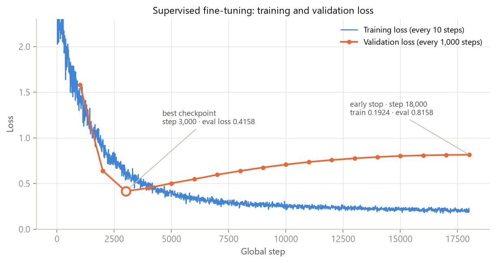

Fine-Tuning a Vision-Language Model for Floor-Plan Understanding
Qwen3.5-9B, a 9-billion-parameter vision-language model, fine-tuned with QLoRA so that it can look at an architectural floor-plan image and answer questions about it as structured JSON: which rooms and objects are present, how many of each, where the X-junctions are, and the polygon of every object in image coordinates. The model reads plans; it does not draw new ones.
Main Process

1. Introduction
A floor plan is a picture that carries structured facts: rooms with names, openings with sizes, fixtures with positions. Software that works on plans needs those facts as data, not as prose. A general vision-language model can describe a plan in words, but it has never seen architectural drawings in volume, it answers inconsistently, and it does not return the counts, classes and coordinates a program can use.
Problems this project addresses
- A pretrained VLM answers questions about floor plans inconsistently and in free prose.
- Answers must be machine-readable: counts, classes and polygon coordinates as valid JSON.
- A 9B model cannot be fully fine-tuned on workstation GPUs; only a small set of parameters can be trained.
- Over a million examples have to be fed through an image processor fast enough to keep three GPUs busy.
- Checkpoints, evaluation and the final merged model must be reproducible from one script.
The answer is supervised fine-tuning on floor-plan question-answer pairs, with a parameter-efficient method so that the whole thing fits on a small multi-GPU box. The pipeline below is what the repository does end to end.
flowchart LR
R[(Floor-plan images
+ LabelMe JSON)]:::store --> G[generate_data.py
questions and answers]:::process
G --> J[(JSONL
train · val)]:::store
J --> P[Resize, cache,
chat template]:::process
P --> M[Qwen3.5-9B 4-bit
+ LoRA r16]:::agent
M --> T[SFTTrainer
eval every 1k steps]:::process
T --> B[(Best checkpoint
by eval loss)]:::store
B --> MG[Merge adapter
into base]:::process
MG --> I[inference.py
JSON answer · overlay]:::output
2. Dataset
Every example is a chat: a user turn with one image and one question, and an assistant turn with the expected answer. The source material is a set
of floor-plan images, each with a LabelMe-style JSON file whose shapes list holds a label and the polygon points of every object.
generate_data.py turns each annotated plan into many question-answer records: a room list, a count per class, comparisons between classes,
junction questions and polygon requests. That is how one annotated image becomes dozens of training lines, and how the set reaches a million records.
2.1 Size and split
| Item | Value | Why |
|---|---|---|
| Training records | 1,037,246 lines in vlm_train.jsonl | Many questions per plan, so the model sees each plan from several angles. |
| Validation records | 238,685 lines in vlm_val.jsonl; 20 % (47,737) used per evaluation | A full pass over 239k records every 1,000 steps would cost more than the training between evaluations. |
| Split | By source image, deterministic seed | Questions about the same plan are near-duplicates; splitting by record would leak plans into validation. |
| Answer formats | Short text, or JSON with counts, classes, polygons | JSON is what the calling software needs; the format is part of what the model learns. |
| Image size | Longest side capped at 1,024 px | Vision tokens grow with image area; 1,024 px keeps a plan readable within the 1,024-token sequence budget. |
2.2 Record format
Each line is one JSON object with a messages array. The plan below is a real unit plan; the two records are the question types asked about it.
{"messages":[
{"role":"user","content":[
{"type":"image","image":"raw_data/images/unit_84a.png"},
{"type":"text","text":"How many bedrooms are shown? Reply as JSON."}
]},
{"role":"assistant","content":[
{"type":"text","text":"{\"bedroom_count\":3}"}
]}
]}
{"messages":[
{"role":"user","content":[
{"type":"image","image":"raw_data/images/unit_84a.png"},
{"type":"text","text":"List the bedrooms as class and polygon."}
]},
{"role":"assistant","content":[
{"type":"text","text":"{\"annotations\":[{\"class\":\"Bedroom\",\"polygon\":[[135,320],[270,320],[270,435],[135,435]]},{\"class\":\"Bedroom\",\"polygon\":[[420,345],[515,345],[515,435],[420,435]]},{\"class\":\"Bedroom\",\"polygon\":[[205,185],[290,185],[290,270],[205,270]]}]}"}
]}
]}

2.3 Source annotation
The LabelMe-style file for a plan is the single source of truth; questions, counts and polygons are all derived from it, so a label fixed once is fixed in every record.
{"imagePath": "unit_84a.png", "imageWidth": 791, "imageHeight": 599,
"shapes": [
{"label": "Bedroom", "shape_type": "polygon", "points": [[135,320],[270,320],[270,435],[135,435]]},
{"label": "Door", "shape_type": "polygon", "points": [[268,352],[286,352],[286,370],[268,370]]},
{"label": "Window", "shape_type": "polygon", "points": [[150,432],[250,432],[250,440],[150,440]]}
]}
What the data preparation checks
- Every referenced image exists and opens; a missing file would crash a worker mid-epoch.
- Polygon coordinates are image pixels, class names are one spelling, and JSON answers are valid JSON.
- Near-duplicate plans are kept on one side of the split.
- Malformed records, empty labels, duplicates and class imbalance are counted before training, because the model learns whatever inconsistency is left in.
3. Method
Full fine-tuning of a 9B model needs the weights, their gradients and two optimizer moments in memory: on the order of 16 bytes per parameter, well over 100 GB. The training box has three GPUs with a fraction of that. Every choice below exists to fit the job on that hardware without giving up the vision layers.
| Choice | What it is | Why it was used here |
|---|---|---|
| Qwen3.5-9B | A dense decoder VLM with a vision encoder and a language model | Strong document and diagram reading out of the box, local weights, a size that fits one GPU in 4-bit with room for activations. A 32B variant was tried but did not fit the same budget. |
| PEFT | Train a small set of added parameters, keep the base frozen | Removes the optimizer state for 9B weights; the trainable set is a few tens of millions of parameters. |
| LoRA, rank 16, alpha 32 | Low-rank update matrices on the linear projections | Rank 16 is enough capacity for a new output format and domain; alpha at 2× rank keeps the update scale stable. Dropout 0.05 against overfitting a million near-duplicate questions. |
target_modules="all-linear" | Adapters on every linear layer, vision and language, attention and MLP | The vision side has never seen plans, so adapting only the language projections leaves the hard part frozen. |
| 4-bit base (QLoRA) | Frozen base weights stored in 4-bit NF4, dequantised per layer on the fly | Cuts the base from 18 GB to under 6 GB, which is what makes batch 4 at 1,024 px possible per GPU. |
| Unsloth | Fused kernels and patched vision-model loading | Faster forward and backward passes and lower activation memory than stock Transformers for the same model. |
| Gradient checkpointing | Recompute activations in the backward pass | Trades compute for memory; without it, 1,024-token sequences with image tokens do not fit at batch 4. |
| TRL SFTTrainer | Supervised fine-tuning loop with evaluation, checkpoints and callbacks | Periodic eval, best-model tracking, early stopping and resume come built in; only the collator is custom. |
flowchart LR
B[Qwen3.5-9B
frozen, 4-bit NF4]:::tool --> V[Vision encoder
+ LoRA]:::process
B --> L[Language model
+ LoRA]:::process
V --> O[Trainable: LoRA A·B on all linear layers
r=16, α=32, dropout 0.05]:::agent
L --> O
O --> C[(Adapter checkpoint
every 1,000 steps)]:::store
C --> M[Merged model
base + best adapter]:::output
3.1 Configuration
| Setting | Value | Why |
|---|---|---|
| Per-device batch, train / eval | 4 / 4 | The largest that fits with 1,024-px images and gradient checkpointing. |
| Gradient accumulation | 3 | Effective batch 4 × 3 × 3 GPUs = 36 records per optimizer step. |
| Learning rate | 1e-4, cosine, 100 warm-up steps | A standard LoRA rate; warm-up protects the fresh adapters from the first noisy gradients, cosine lets the end of training settle. |
| Epoch limit | 10 | An upper bound; early stopping decides the real length. |
| Image longest side / sequence | 1,024 px / 1,024 tokens | Enough resolution for dimension text and thin walls, within memory. |
| Precision | bf16 where supported | No loss scaling needed and the same range as fp32. |
| Evaluate and save | Every 1,000 steps, keep 2 checkpoints | Frequent enough to catch the minimum of the validation loss; two checkpoints keep the disk bounded. |
| Best model | eval_loss, lower is better | The only metric available on every evaluation; task metrics come after training. |
| Early stopping | Patience 15 evaluations, threshold 1e-4 | Stops a run that has stopped improving without a person watching it. |
| Data loading | 8 workers, pinned memory, persistent | Image decoding is the bottleneck, not the GPU; the cache and workers keep the GPUs fed. |
| Logging | TensorBoard every 10 steps, training.log, run_summary.json | Curves during the run; a summary file after it. |
4. Training pipeline
The stages below are the main script, train_qwen35_vlm_unsloth.py, with the configuration values repeated in place so the page reads as a walkthrough.
4.1 Configuration and data
import torch
from datasets import load_dataset
from peft import PeftModel
from transformers import AutoModelForImageTextToText, EarlyStoppingCallback
from trl import SFTConfig, SFTTrainer
from unsloth import FastVisionModel
MODEL_DIR, OUTPUT_DIR = Path("models/Qwen3.5-9B"), Path("outputs/qwen35-floorplan-lora")
TRAIN_FILE, VAL_FILE = Path("train_data/vlm_train.jsonl"), Path("train_data/vlm_val.jsonl")
TRAIN_PERCENTAGE, VALIDATION_PERCENTAGE = 100, 20
NUM_TRAIN_EPOCHS, LEARNING_RATE = 10, 1e-4
PER_DEVICE_TRAIN_BATCH_SIZE, PER_DEVICE_EVAL_BATCH_SIZE, GRADIENT_ACCUMULATION_STEPS = 4, 4, 3
MAX_IMAGE_SIDE, MAX_SEQ_LENGTH, LOAD_IN_4BIT, SEED = 1024, 1024, True, 42
dataset = load_dataset("json", data_files={"train": str(TRAIN_FILE), "validation": str(VAL_FILE)})
def limit_dataset_by_percentage(split, percentage):
n = max(1, int(len(split) * percentage / 100.0))
return split.shuffle(seed=SEED).select(range(n)) # same subset on every run
train_dataset = limit_dataset_by_percentage(dataset["train"], TRAIN_PERCENTAGE)
val_dataset = limit_dataset_by_percentage(dataset["validation"], VALIDATION_PERCENTAGE)
4.2 Image cache and chat template
Decoding and resizing a million PNGs every epoch would starve the GPUs, so each image is resized once, written to a cache keyed by the hash of its path, and read from there on every later pass. The processor then renders the messages with the model's own chat template, so the training text is byte-for-byte what the model will see at inference.
def resize_and_cache_image(image_path, cache_dir, max_image_side):
source = Path(image_path)
cached = cache_dir / (hashlib.md5(str(source.resolve()).encode()).hexdigest() + (source.suffix.lower() or ".jpg"))
if cached.exists():
return str(cached)
image = Image.open(source).convert("RGB")
longest = max(image.size)
if longest > max_image_side: # shrink only, never upscale
scale = max_image_side / longest
image = image.resize((max(1, int(image.width * scale)), max(1, int(image.height * scale))), Image.Resampling.BICUBIC)
image.save(cached, quality=95)
return str(cached)
def preprocess_example(example, processor, cache_dir):
messages, image_paths = [], []
for message in example["messages"]:
content = []
for item in message["content"]:
if item["type"] == "image":
image_paths.append(resize_and_cache_image(item["image"], cache_dir, MAX_IMAGE_SIDE))
content.append({"type": "image"})
else:
content.append({"type": "text", "text": item["text"]})
messages.append({"role": message["role"], "content": content})
prompt = processor.apply_chat_template(messages, tokenize=False, add_generation_prompt=False).strip()
return {"text": prompt, "image_paths": image_paths}
train_dataset = train_dataset.map(lambda r: preprocess_example(r, processor, IMAGE_CACHE_DIR / "train"),
remove_columns=train_dataset.column_names, desc="Preprocessing train")
4.3 Model and adapters
model, processor = FastVisionModel.from_pretrained(model_name=str(MODEL_DIR), load_in_4bit=LOAD_IN_4BIT)
model = FastVisionModel.get_peft_model(
model,
finetune_vision_layers=True, # the vision side has never seen floor plans
finetune_language_layers=True,
finetune_attention_modules=True,
finetune_mlp_modules=True,
r=16, lora_alpha=32, lora_dropout=0.05, bias="none",
target_modules="all-linear",
)
FastVisionModel.for_training(model)
model.config.use_cache = False # the KV cache is for generation, not for training
4.4 Collator: what the loss is computed on
The language-model loss must only count the tokens the model is supposed to produce. Padding tokens and the image placeholder tokens are set to
-100 so that they are ignored; otherwise the model would spend its capacity learning to predict padding and image markers.
def build_collate_fn(processor, max_seq_length):
pad_token_id = processor.tokenizer.pad_token_id
image_token_ids = [processor.tokenizer.convert_tokens_to_ids(t)
for t in (processor.tokenizer.special_tokens_map.get(n) for n in ("boi_token", "image_token")) if t]
def collate_fn(examples):
texts = [e["text"] for e in examples]
images = [[Image.open(p).convert("RGB") for p in e["image_paths"]] for e in examples]
batch = processor(text=texts, images=images, padding=True, truncation=True,
max_length=max_seq_length, return_tensors="pt")
labels = batch["input_ids"].clone()
labels[labels == pad_token_id] = -100
for token_id in image_token_ids:
labels[labels == token_id] = -100
batch["labels"] = labels
return batch
return collate_fn
4.5 Trainer, early stopping, launch
training_args = SFTConfig(
output_dir=str(OUTPUT_DIR),
num_train_epochs=NUM_TRAIN_EPOCHS,
per_device_train_batch_size=PER_DEVICE_TRAIN_BATCH_SIZE,
per_device_eval_batch_size=PER_DEVICE_EVAL_BATCH_SIZE,
gradient_accumulation_steps=GRADIENT_ACCUMULATION_STEPS,
learning_rate=LEARNING_RATE, lr_scheduler_type="cosine", warmup_steps=100,
gradient_checkpointing=True, gradient_checkpointing_kwargs={"use_reentrant": False},
save_strategy="steps", save_steps=1000, eval_strategy="steps", eval_steps=1000, logging_steps=10,
bf16=torch.cuda.is_bf16_supported(), fp16=not torch.cuda.is_bf16_supported(),
remove_unused_columns=False, dataset_kwargs={"skip_prepare_dataset": True},
report_to="tensorboard", save_total_limit=2,
load_best_model_at_end=True, metric_for_best_model="eval_loss", greater_is_better=False,
ddp_find_unused_parameters=False,
dataloader_num_workers=8, dataloader_pin_memory=True, dataloader_persistent_workers=True,
)
trainer = SFTTrainer(
model=model, args=training_args,
train_dataset=train_dataset, eval_dataset=val_dataset,
data_collator=build_collate_fn(processor, MAX_SEQ_LENGTH), processing_class=processor,
callbacks=[EarlyStoppingCallback(early_stopping_patience=15, early_stopping_threshold=1e-4),
SaveAliasCallback()], # keeps best-checkpoint/ and latest/ aliases up to date
)
trainer.train() # or trainer.train(resume_from_checkpoint="outputs/.../checkpoint-3000")
CUDA_VISIBLE_DEVICES=0,1,2 accelerate launch --multi_gpu --num_processes 3 train_qwen35_vlm_unsloth.py
tensorboard --logdir outputs/tensorboard/qwen35-floorplan-lora
4.6 Merge the best adapter
An adapter on its own needs the base model, PEFT and the right loading code at inference time. Merging the LoRA matrices into the base weights
gives one ordinary Transformers model that AutoModelForImageTextToText.from_pretrained can load anywhere.
base = AutoModelForImageTextToText.from_pretrained(MODEL_DIR, torch_dtype=torch.bfloat16).to("cuda")
merged = PeftModel.from_pretrained(base, OUTPUT_DIR / "best-checkpoint").merge_and_unload()
merged.save_pretrained(OUTPUT_DIR / "merged-best")
processor.save_pretrained(OUTPUT_DIR / "merged-best")
5. Training results
The run went to global step 18,000, 0.62 of the first epoch, before early stopping ended it: the validation loss reached its minimum at step 3,000 and then rose for fifteen evaluations in a row while the training loss kept falling. That is the classic shape of a model that has learned the task and is starting to memorise the training questions, and it is exactly what the patience rule is there to catch.



Recorded in run_summary.json / training.log | Value |
|---|---|
| Global steps run | 18,000 (epoch 0.6247 of 10) |
| Training loss at the end | 0.1924 |
| Best validation loss | 0.4158 at checkpoint-3000 |
| Validation loss at the end | 0.8158 |
| Validation mean token accuracy at the end | 0.8437 |
| Selected adapter | best-checkpoint → checkpoint-3000 |
| Merged model | outputs/qwen35-floorplan-lora/merged-best |
What the curves say
- Three thousand steps, about 108,000 records, were enough to teach the output format and the domain; the rest of the run only fitted the training set better.
- Token accuracy keeps creeping up after the loss minimum because the model becomes more confident on the tokens it already gets right; the loss rises because it also becomes more confident on the ones it gets wrong.
- Loss and token accuracy are training diagnostics. Whether counts, junctions and polygons are right is checked on held-out plans with
inference.py, record by record.
6. Inference and output
Artifacts live under outputs/qwen35-floorplan-lora/: the intermediate checkpoint-*/ adapters with trainer state, the
best-checkpoint/ alias, the merged-best/ model with its processor, and training.log and run_summary.json.
inference.py takes an image path and a question, formats them with the same chat template as training, generates the answer, and when the
answer contains polygons draws them over the plan and saves the overlay.
flowchart LR
I[Floor-plan image
+ question]:::input --> P[Processor
chat template]:::process
P --> M[merged-best
Qwen3.5-9B + LoRA]:::agent
M --> J[JSON answer
counts · classes · polygons]:::output
J --> O[Overlay image
polygons on the plan]:::output
from transformers import AutoModelForImageTextToText, AutoProcessor
model_path = "outputs/qwen35-floorplan-lora/merged-best"
processor = AutoProcessor.from_pretrained(model_path)
model = AutoModelForImageTextToText.from_pretrained(model_path, device_map="auto")
messages = [{"role": "user", "content": [{"type": "image", "image": image_path},
{"type": "text", "text": "List the bedrooms as class and polygon."}]}]
prompt = processor.apply_chat_template(messages, tokenize=False, add_generation_prompt=True)
inputs = processor(text=[prompt], images=[[Image.open(image_path).convert("RGB")]], return_tensors="pt").to(model.device)
output = model.generate(**inputs, max_new_tokens=512, do_sample=False) # greedy: JSON must be exact
answer = processor.batch_decode(output[:, inputs["input_ids"].shape[1]:], skip_special_tokens=True)[0]
draw_polygons(image_path, json.loads(answer)["annotations"], out_path) # the overlay saved next to the answer

7. Repository
The training script, data generator and inference script are public: github.com/Laudarisd/finetune-llm-vllm. The base weights and the JSONL data are not redistributed; the weights come from the model's own Hugging Face repository under its access terms.
| Path | Purpose |
|---|---|
train.py, train_qwen35_vlm_unsloth.py | Unsloth / TRL supervised fine-tuning pipeline |
generate_data.py | LabelMe JSON → question-answer JSONL records |
inference.py | Image + question → JSON answer and polygon overlay |
config.yaml, finetune_run.sh, tensorboard.sh | Run configuration, launcher, metrics viewer |
train_data/ | vlm_train.jsonl, vlm_val.jsonl, image_cache/ |
raw_data/images/, raw_data/json/ | Floor-plan images and their LabelMe annotations |
models/Qwen3.5-9B/ | Local base model and processor files |
outputs/qwen35-floorplan-lora/ | Checkpoints, best adapter, merged model, logs |